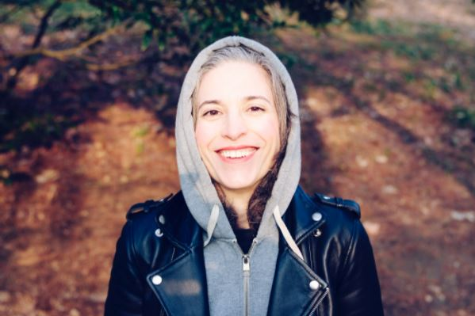

As someone with no friends or family in tech, the Launchpad Programme was incredibly valuable. It made me think about
all the different career options available to me - some that I’d never considered before. It gave me the confidence to
succeed in interviews, knowing that I was well prepared and practiced. I would highly recommend it to anyone seriously
interested in a tech career

Changing careers is always hard, but getting into tech seemed almost insurmountable to me. I had a good background in
science, but wasn’t sure where to start, what languages to learn, and what resources to trust online. My mentor gave me
some great advice, and even basically personal tutoring on the more tricky aspects of object-oriented programming, data
structures and algorithms. It made such a difference having someone to talk to who really knew their stuff
I’d been stuck as a lead dev for more than a decade, and was ready for the next step in my career. I thought I wanted to be
Head of Engineering, but the Launchpad Programme made me rethink things, and consider software architecture as a career route.
It actually suited my skills a lot more, and most of the roles available were fully remote, which was a real bonus. I’ve just
started my first architecture role and am loving every moment